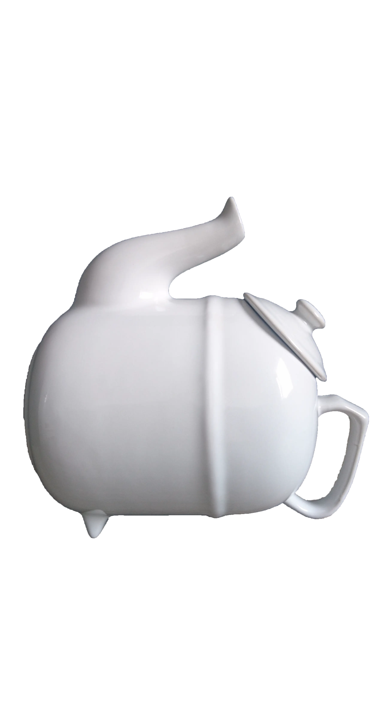
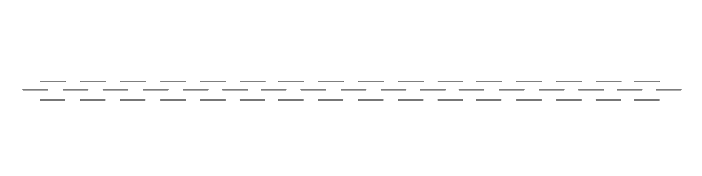

WAT
WILDE
IK
LEREN?
Ik wilde leren hoe ik snel en creatief ideeën kan bedenken, uitwerken en testen, met de klant als middelpunt. Mijn doel was om een proces te ontwikkelen waarmee ik niet alleen waardevolle feedback kon verzamelen, maar ook gericht verbeteringen kon aanbrengen die een positieve impact hebben en toehankelijk zijn voor de gebruikers.
MAAR...
WAT HEB IK GELEERD?
De Ontwerpend Aanpak is een snelle manier om ideeën te bedenken, uit te werken en te testen. Dit gebeurt in vier dagen via de Design Sprint (SPINT), met zes stappen: Map, Sketch, Decide, Storyboard, Prototype en Test.
THEORIE
Het idee achter deze aanpak is simpel: je werkt stap voor stap voor een doel. Samen met een team verzamel je ideeën, kies je het beste uit, werk je het uit in een prototype en test je het meteen met gebruikers. Zo krijg je snel feedback en kun je je idee vaken en efficienter verbeteren.
METHODES
Het proces begint met Map, waar je het probleem en je doelen duidelijk maakt. Daarna ga je in Sketch ideeën schetsen, met behulp van...

Crazy 8's
Crazy 8’s is een techniek om snel ideeën te genereren. In 8 minuten schets je 8 verschillende concepten, wat je dwingt om creatief te denken zonder beperkingen. Dit levert een breed scala aan ideeën op, waaruit je de beste kunt kiezen.
Solution Sketches
Solution Sketches zijn schetsen waarin je één idee verder uitwerkt. Je richt je op de belangrijkste details en maakt het zo duidelijk mogelijk. Dit maakt je idee concreter en helpt om feedback te krijgen.
In Decide kies je welke ideeen je verder gaat uitwerken. Met Storyboard maak je een verhaallijn van hoe je doelgroep je product zal waarschijnlijk gebruiken om de flow en je idee visueel uit te leggen. In Prototype bouw je een simpele versie van je idee. Tot slot test je het in Test, waarbij gebruikers feedback geven.
BEROEPS-
PRODUCTEN
De Ontwerpende Aanpak levert praktische resultaten op, zoals een samenvatting van het probleem, veel schetsen, een storyboard, een prototype en veel feedback. Hiermee kun je snel en gericht werken aan volgende eteraties.
ONTWIKKELINGS-
GESPREK
Door de Ontwikkelingsgesprekken heb ik geleerd om dieper in te gaan op Human-Centered Design en mijn keuzes beter te onderbouwen met behulp van User Stories.
EMOTIONAL
DESIGN
WHY WE LOVE
(OR HATE)
EVERYDAY THINGS
DON
NORMAN
AUTHOR OF THE DESIGN
OF EVERYDAY THINGS

INZICHTEN
INZICHTEN UIT HET BOEK DIE IK IN MIJN
PROJECT HEB GEIMPLEMENTEERD

Tijdens het lezen van het boek Emotional Design heb ik belangrijke inzichten opgedaan die ik heb toegepast in mijn projecten.
Een van de belangrijkste lessen is dat emoties een grote invloed hebben op hoe mensen problemen oplossen. Wanneer mensen zich gelukkig of ontspannen voelen, kunnen ze complexere problemen beter aanpakken. Dit wordt versterkt als het product aantrekkelijk is. Tegelijkertijd kan een gevoel van urgentie, zoals angst door een deadline, mensen aansporen om sneller te werken.
Het boek beschrijft drie niveaus van ontwerp:
- Visceraal niveau(Visceral level): Dit gaat over de eerste indruk en hoe aantrekkelijk iets eruitziet.
- Gedragsniveau(Behavioral level): Dit richt zich op gebruiksgemak en functionaliteit.
- Reflectief niveau(Reflective level): Dit betreft de persoonlijke associatie en de betekenis die gebruikers aan een product hechten.
Daarnaast leerde ik dat aantrekkingskracht en persoonlijke associaties een sterke rol spelen in hoe mensen zich hechten aan een product. Dit kan zijn vanwege status, maar ook vanwege emotionele waarde. Zoals Roel, die erg blij wordt en een persoonlijke associatie maakt wanneer hij olifanten of een symbool daarvan ziet. Het begrijpen van de gebruiker is cruciaal, en dat omvat het user model, het designer model en het system image.
Toepassing van inzichten
Tijdens TLE1 Deel 2 heb ik geprobeerd het ontwerp van de website aantrekkelijk en memorabel te maken. Ik wilde dat gebruikers plezier zouden ervaren bij het gebruik ervan. Ik heb er ook voor gezorgd dat de website begrijpelijk is. Bijvoorbeeld: tijdens de quiz presenteer ik slechts één vraag per pagina. Dit maakt de ervaring persoonlijker en overzichtelijker.
Ik heb aandacht besteed aan wat het belangrijkste is dat een gebruiker als eerste op de pagina moet zien. Door het gebruik van kleuren, grootte en positie heb ik die elementen benadrukt.
Voor de website van Vormvrije Signatuur heb ik het ontwerp specifiek gebaseerd op inzichten uit Emotional Design. Ik heb elementen uit het boek letterlijk verwerkt als een subtiele herinnering voor mensen die bekend zijn met het boek. De kernpunten zijn duidelijk gehighlight als titels.
Omdat deze website veel persoonlijker voor mij is dan TLE1 Deel 2, heb ik gefocust op het laten zien van hoe ik de verschillende aanpakken zie door het design. Bijvoorbeeld: Onderzoekende aanpak wordt gepresenteerd in een meer saaie, documentvorm, terwijl Ontwerpende aanpak veel speelser en chaotischer is, gericht op creatieve brainstorms.
Om de emotie van de gebruiker te verbeteren, heb ik simpele, speelse animaties toegevoegd die een toy-achtige kwaliteit hebben. Dit draagt bij aan een plezierige en memorabele ervaring.
WAT HEB IK
BEREIKT...
MAP SKETCH DECIDE STORYBOARD PROTOTYPE TEST
MAP SKETCH DECIDE STORYBOARD PROTOTYPE TEST
TROTS?
IK BEN
TROTS OP...
TROTS
Ik ben trots op mijn vermogen om creatief te werken onder tijdsdruk en om gebruikersfeedback direct te verwerken in mijn ontwerpen.
ONTWERPENDE
AANPAK